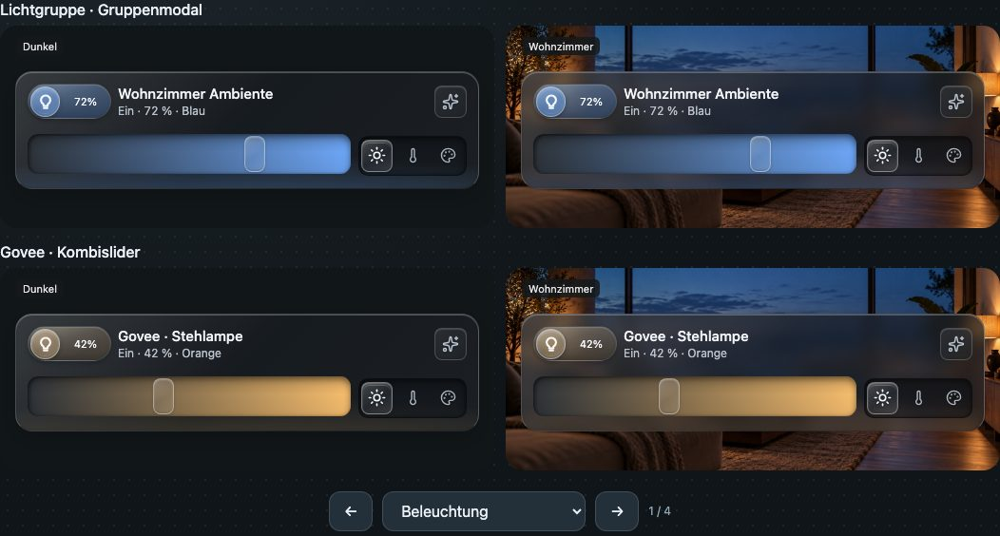
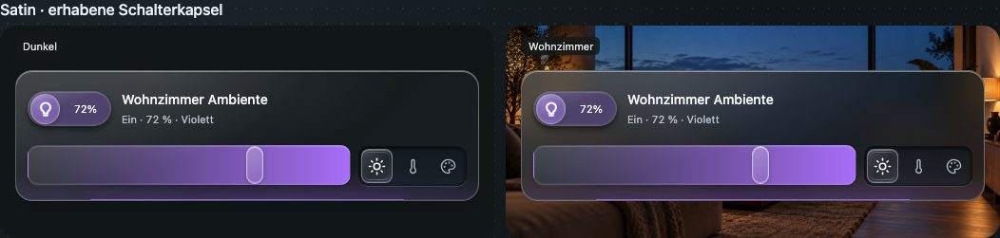
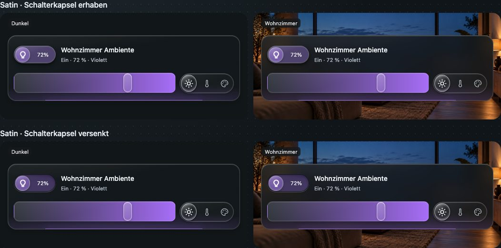
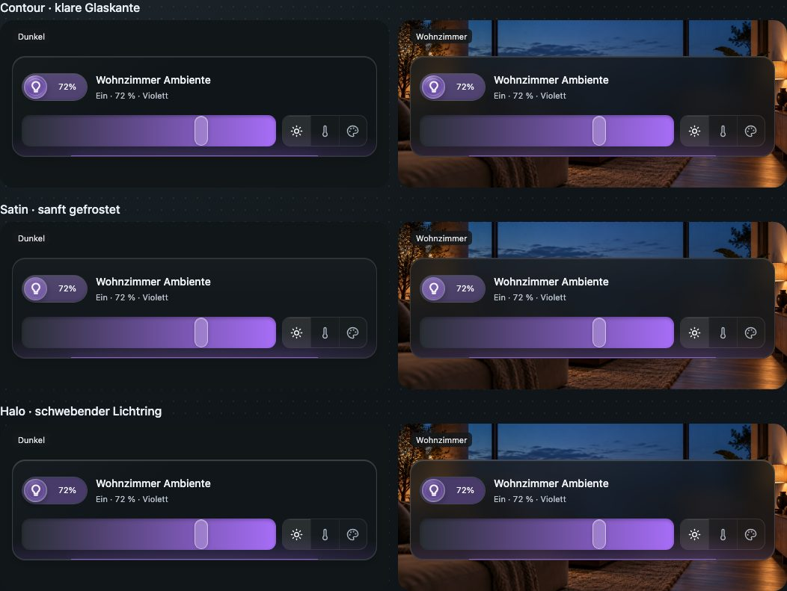
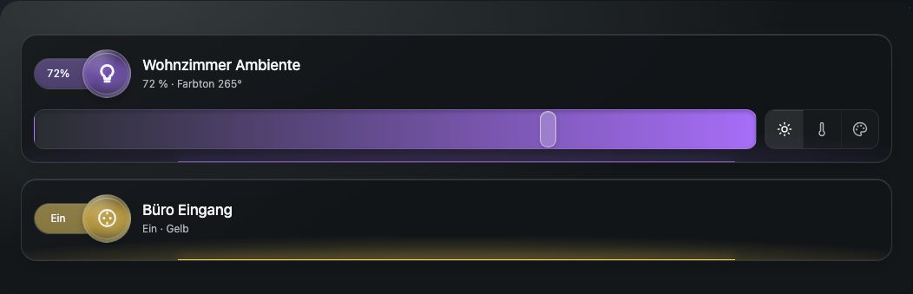
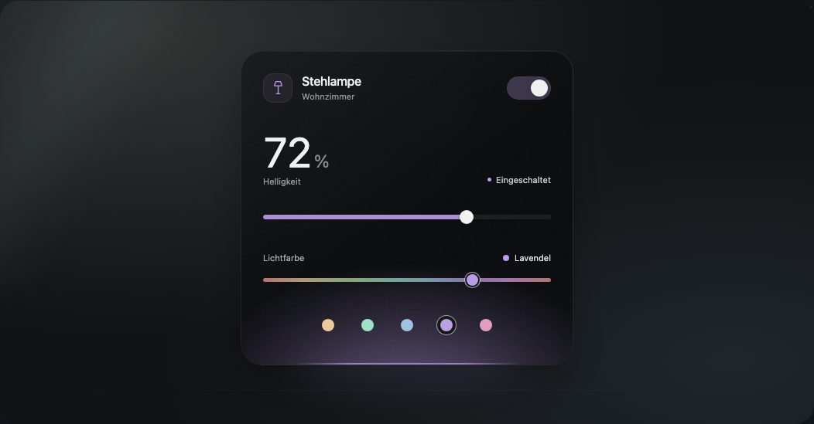
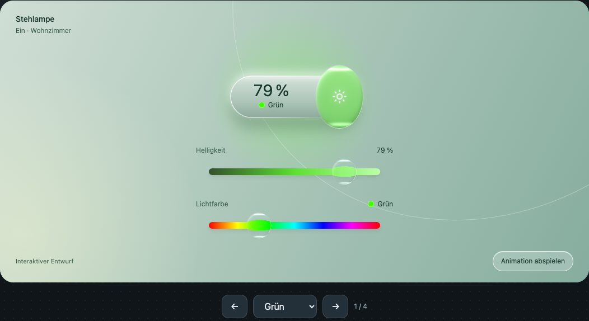
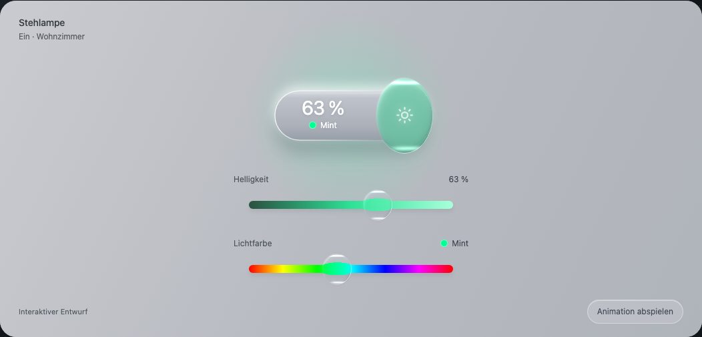
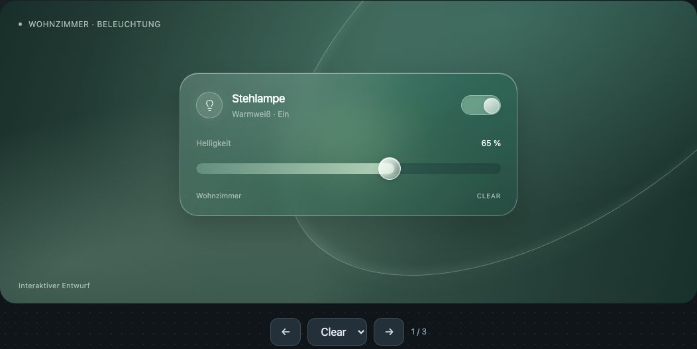

Satin Glass · Kartensystem
Die gemeinsame Gestaltung für acht Kartenfamilien: Lichtgruppe, Stehlampe, Steckdose, Ventilator, Button, Mushroom und zwei Thermostate.
Alle elf interaktiven Entwürfe der Serie — von den ersten Glaslinsen bis zum gemeinsamen Satin-Kartensystem.
Satin Glass ausprobieren ↗
Satin Glass / acht KartenfamilienDie gemeinsame Gestaltung für acht Kartenfamilien: Lichtgruppe, Stehlampe, Steckdose, Ventilator, Button, Mushroom und zwei Thermostate.
Kompakter Schalter, Rauchglas-Effekttaste und ein bedienbares Gruppenmodal mit Einzellichtern.

Ausprobieren ↗Erhabene runde Schalterlinse mit rechteckiger, eingelassener Modusgruppe und breitem Clear-Reflex.
Eingelassener rechteckiger Schalter und bündige rechteckige Auswahl-Linse auf weichem Rauchglas.

Ausprobieren ↗Beide Tiefenwirkungen der kompakten Schalterkapsel, jeweils auf dunklem und fotografischem Hintergrund.

Ausprobieren ↗Contour, Satin und Halo: drei Materialideen mit denselben bedienbaren Lichtreglern auf zwei Hintergründen.

Ausprobieren ↗Flachere dunkle Glasfläche mit elastischem Icon-Schalter, Kombislider und gelbem Steckdosen-Fallback.

Ausprobieren ↗Sanft gefrostetes schwarzes Glas mit farbigem Lichtschein von unten sowie Farbe und Helligkeit.

Ausprobieren ↗Dieselbe animierte Glaslinse auf Grün, Schwarz, Weiß und Grau. Farbe und Helligkeit sind direkt bedienbar.

Ausprobieren ↗Die frühe breite Glaslinse mit federnder Bewegung, Farbanzeige, Helligkeit und zuschaltbarer Animation.

Ausprobieren ↗Drei frühe moderne Schalterideen mit weichen Animationen, Lichtzustand und Helligkeitsreglern.